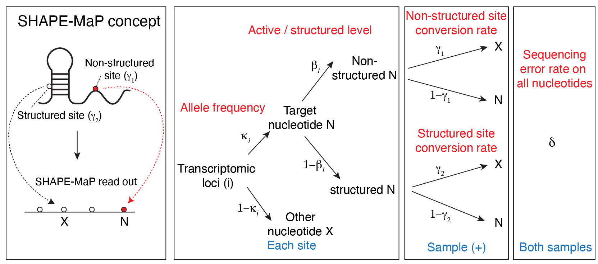
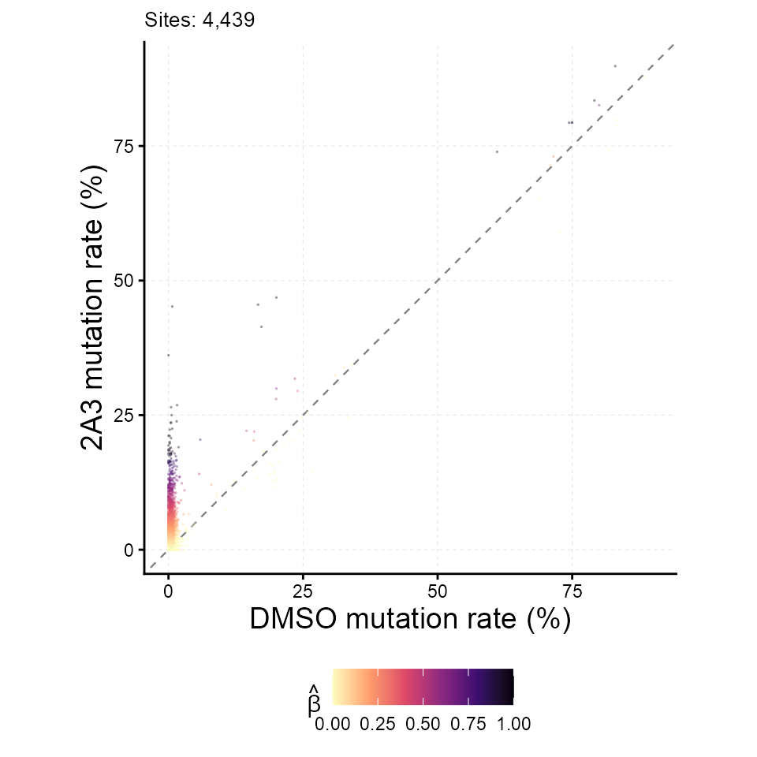
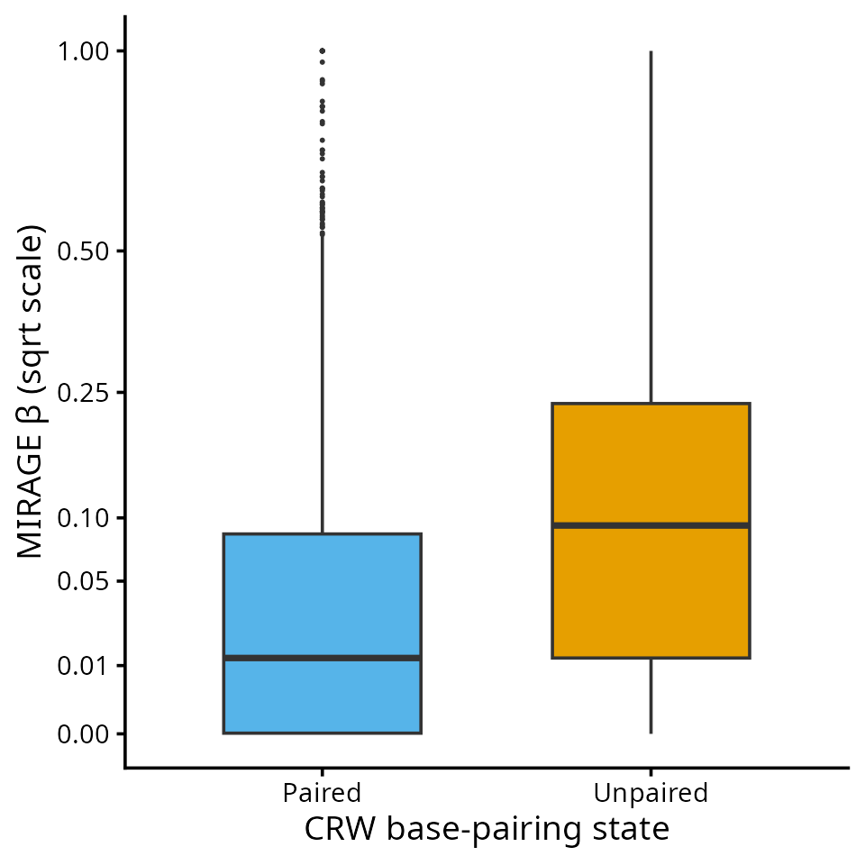

MIRAGE RNA Structure Tutorial (SHAPE-MaP)
Yang Li
Source:vignettes/mirage-rna-structure.Rmd
mirage-rna-structure.RmdThis tutorial shows how MIRAGE is used for RNA structure mutational profiling (SHAPE-MaP and related chemistries). A structure-probing reagent acylates flexible, usually unpaired, nucleotides; reverse transcription then records the adduct as a mutation. Comparing the reagent-treated sample with a DMSO control, MIRAGE estimates a per-nucleotide reactivity that is already corrected for background mutation, sequencing error, and allele mixing.
| MIRAGE parameter | meaning in SHAPE-MaP |
|---|---|
beta_est (β) |
fraction of molecules with a reagent-induced adduct at the site, i.e. reactivity on the molecule scale |
lambda1 (γ₁) |
reagent-induced mutation rate at a fully accessible site |
lambda2 (γ₂) |
background mutation rate in the treated sample at unreactive sites |
Conceptual Overview

SHAPE-MaP structure-probing concept and its MIRAGE parameterization.
The Example Data
The package ships a complete count table for E. coli 16S and 23S rRNA probed in vitro with 2A3 (BioProject PRJNA646706), with three in vitro DMSO libraries pooled as the control. Per-position pileups were oriented to the reference strand, mutations were counted as any non-reference base or deletion, and positions with at least 50 reads in both samples were kept.
count_table <- read.delim(
system.file("extdata", "shapemap_ecoli_rRNA_2A3_invitro_counts.tsv", package = "MIRAGE")
)
nrow(count_table)
#> [1] 4439
head(count_table, 5)
#> pos motif type treated_fixed_count treated_depth
#> 1 16S_rRNA_7_+ UGAAG A 50 51
#> 2 16S_rRNA_8_+ GAAGA A 55 56
#> 3 16S_rRNA_9_+ AAGAG G 65 66
#> 4 16S_rRNA_10_+ AGAGU A 71 71
#> 5 16S_rRNA_11_+ GAGUU G 79 81
#> control_fixed_count control_depth
#> 1 227 227
#> 2 232 233
#> 3 241 242
#> 4 248 248
#> 5 261 263
table(count_table$type)
#>
#> A C G U
#> 1149 987 1395 908Here pos is
<rRNA>_<position>_+, motif is the
5-mer around the nucleotide, and type is the reference
base. The empirical model does not use motif or
type for inference; they are carried through to the output
for convenience.
The accepted secondary structure of both rRNAs (Comparative RNA Web, CRW) is shipped as a per-nucleotide pairing table for evaluation.
pairing <- read.delim(
system.file("extdata", "shapemap_ecoli_rRNA_CRW_pairing.tsv", package = "MIRAGE")
)
head(pairing, 3)
#> pos chrom position base paired
#> 1 16S_rRNA_1_+ 16S_rRNA 1 A 0
#> 2 16S_rRNA_2_+ 16S_rRNA 2 A 0
#> 3 16S_rRNA_3_+ 16S_rRNA 3 A 0
table(pairing$chrom, pairing$paired)
#>
#> 0 1
#> 16S_rRNA 588 954
#> 23S_rRNA 1166 1738Infer Reactivity With MIRAGE
library(MIRAGE)
#> Loading required package: doParallel
#> Loading required package: foreach
#> Loading required package: iterators
#> Loading required package: parallel
#> Loading required package: dplyr
#>
#> Attaching package: 'dplyr'
#> The following objects are masked from 'package:stats':
#>
#> filter, lag
#> The following objects are masked from 'package:base':
#>
#> intersect, setdiff, setequal, union
structure_res <- estimate_inference_with_empirical(
chr.info = count_table[, c("pos", "motif", "type")],
treatment_fixed_count = count_table$treated_fixed_count,
control_fixed_count = count_table$control_fixed_count,
treatment_depth = count_table$treated_depth,
control_depth = count_table$control_depth,
delta = 0.001,
depth.cutoff = 50,
homo.cutoff = 0.99,
lambda1 = "auto",
bg.method = "fisher",
bg.target = "both",
highly.methyl.cutoff = 0.95,
seed = 123,
thread = tutorial_threads
)
#> Considering 4051 (91.26%) sites as homozygous...
#> Hyper-thread registered: TRUE
#> Using 2 threads to make homo initial test...
#> Considering 2733 (67.46%) sites as background (homozygous sites only)...
#> Hyper-thread registered: TRUE
#> Using 2 threads to make homo final test...
#> Considering 934 (23.06%) sites as high-signal site candidates (homozygous sites only)...
#> Hyper-thread registered: TRUE
#> Using 2 threads to make homo beta estimation...
#> Hyper-thread registered: TRUE
#> Using 2 threads to make heter beta estimation...
data.frame(
n_homosites = nrow(structure_res$homosites),
n_hetersites = nrow(structure_res$hetersites),
lambda1 = structure_res$lambda1,
lambda2 = structure_res$lambda2
)
#> n_homosites n_hetersites lambda1 lambda2
#> 1 4051 388 0.1914083 0.003785959For structure probing there is no genotype in the usual sense, but
the same allele-aware branch is useful: nucleotides whose
control already shows a mutation rate above
1 - homo.cutoff (for example, natural modifications or
reverse-transcription artefacts) are routed to hetersites,
where the extra control signal is absorbed by kappa_est
instead of inflating β. In practice the reactivity of every nucleotide
is the union of the two tables.
reactivity <- rbind(
cbind(structure_res$homosites[, c("pos", "type", "beta_est", "fisher_fdr")], site_class = "homo"),
cbind(structure_res$hetersites[, c("pos", "type", "beta_est", "fisher_fdr")], site_class = "heter")
)
reactivity <- reactivity[order(reactivity$pos), ]
nrow(reactivity)
#> [1] 4439
head(reactivity, 5)
#> pos type beta_est fisher_fdr site_class
#> 4 16S_rRNA_10_+ A 1.006474e-06 1.000000000 homo
#> 94 16S_rRNA_100_+ G 1.006474e-06 1.000000000 homo
#> 994 16S_rRNA_1000_+ A 1.315812e-02 0.522244349 homo
#> 995 16S_rRNA_1001_+ C 2.082204e-01 0.007611698 homo
#> 996 16S_rRNA_1002_+ A 9.173400e-01 0.595037389 heterDiagnostic Scatter
plot_signal_scatter(
structure_res,
color_by = "beta_est",
xlab = "DMSO mutation rate (%)", ylab = "2A3 mutation rate (%)"
)
Compare β Between Paired And Unpaired Nucleotides
Reactivity should be higher at unpaired nucleotides. Join β with the CRW annotation and compare the distributions and the ranking performance.
reactivity <- merge(reactivity, pairing[, c("pos", "paired")], by = "pos")
reactivity$state <- factor(ifelse(reactivity$paired == 1, "Paired", "Unpaired"),
levels = c("Paired", "Unpaired"))
tapply(reactivity$beta_est, reactivity$state, median)
#> Paired Unpaired
#> 0.01233527 0.09308379
auroc <- function(score, positive) {
r <- rank(score)
n1 <- sum(positive); n0 <- sum(!positive)
(sum(r[positive]) - n1 * (n1 + 1) / 2) / (n1 * n0)
}
auroc(reactivity$beta_est, reactivity$state == "Unpaired")
#> [1] 0.6815549
library(ggplot2)
ggplot(reactivity, aes(x = state, y = beta_est)) +
geom_boxplot(outlier.size = 0.4, width = 0.6, fill = c("#56B4E9", "#E69F00")) +
scale_y_sqrt(breaks = c(0, 0.01, 0.05, 0.1, 0.25, 0.5, 1)) +
labs(x = "CRW base-pairing state", y = "MIRAGE β (sqrt scale)") +
theme_classic(base_size = 14)
Reactivity profiles for downstream folding (for example, as
pseudo-energy restraints) can be exported directly from
reactivity, using beta_est per nucleotide.
Adapting To Your Own Structure-Probing Data
- Build a per-nucleotide table with the seven required columns from the treated and control pileups. Count every non-reference base (and deletions, if your protocol produces them) as a mutation.
- Keep
depth.cutoffhigh enough that the observed rates are stable (50–100 reads is typical for MaP data). - Run the same call once per reagent or condition; γ₁ and γ₂ are learned separately for each treated sample, so reactivities from different reagents are placed on a comparable β scale.
Session Information
sessionInfo()
#> R version 4.5.3 (2026-03-11)
#> Platform: x86_64-conda-linux-gnu
#> Running under: Ubuntu 24.04.4 LTS
#>
#> Matrix products: default
#> BLAS/LAPACK: /home/yangli/software/micromamba/envs/mirage-r/lib/libopenblasp-r0.3.34.so; LAPACK version 3.12.0
#>
#> locale:
#> [1] LC_CTYPE=C.UTF-8 LC_NUMERIC=C LC_TIME=C.UTF-8
#> [4] LC_COLLATE=C.UTF-8 LC_MONETARY=C.UTF-8 LC_MESSAGES=C.UTF-8
#> [7] LC_PAPER=C.UTF-8 LC_NAME=C LC_ADDRESS=C
#> [10] LC_TELEPHONE=C LC_MEASUREMENT=C.UTF-8 LC_IDENTIFICATION=C
#>
#> time zone: America/Chicago
#> tzcode source: system (glibc)
#>
#> attached base packages:
#> [1] parallel stats graphics grDevices utils datasets methods
#> [8] base
#>
#> other attached packages:
#> [1] ggplot2_4.0.3 MIRAGE_0.6.0 dplyr_1.2.1 doParallel_1.0.17
#> [5] iterators_1.0.14 foreach_1.5.2
#>
#> loaded via a namespace (and not attached):
#> [1] gtable_0.3.6 jsonlite_2.0.0 compiler_4.5.3 tidyselect_1.2.1
#> [5] jquerylib_0.1.4 scales_1.4.0 systemfonts_1.3.2 textshaping_1.0.5
#> [9] yaml_2.3.12 fastmap_1.2.0 R6_2.6.1 labeling_0.4.3
#> [13] generics_0.1.4 knitr_1.51 htmlwidgets_1.6.4 tibble_3.3.1
#> [17] desc_1.4.3 RColorBrewer_1.1-3 bslib_0.12.0 pillar_1.11.1
#> [21] rlang_1.3.0 cachem_1.1.0 xfun_0.60 S7_0.2.2
#> [25] fs_2.1.0 sass_0.4.10 otel_0.2.0 viridisLite_0.4.3
#> [29] cli_3.6.6 withr_3.0.3 pkgdown_2.2.1 magrittr_2.0.5
#> [33] digest_0.6.39 grid_4.5.3 lifecycle_1.0.5 vctrs_0.7.3
#> [37] evaluate_1.0.5 glue_1.8.1 farver_2.1.2 codetools_0.2-20
#> [41] ragg_1.5.2 rmarkdown_2.31 tools_4.5.3 pkgconfig_2.0.3
#> [45] htmltools_0.5.9